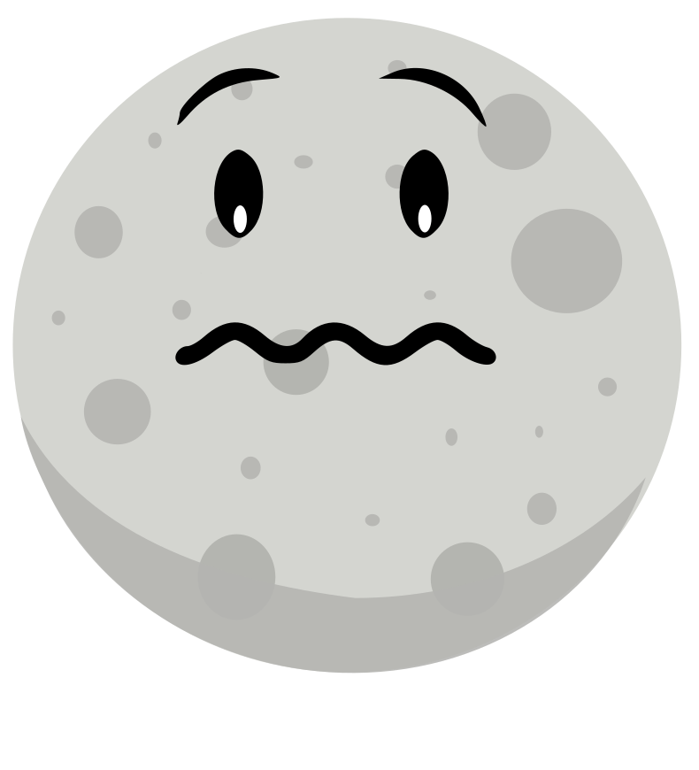
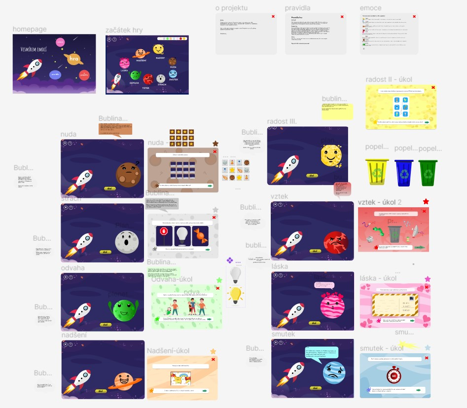
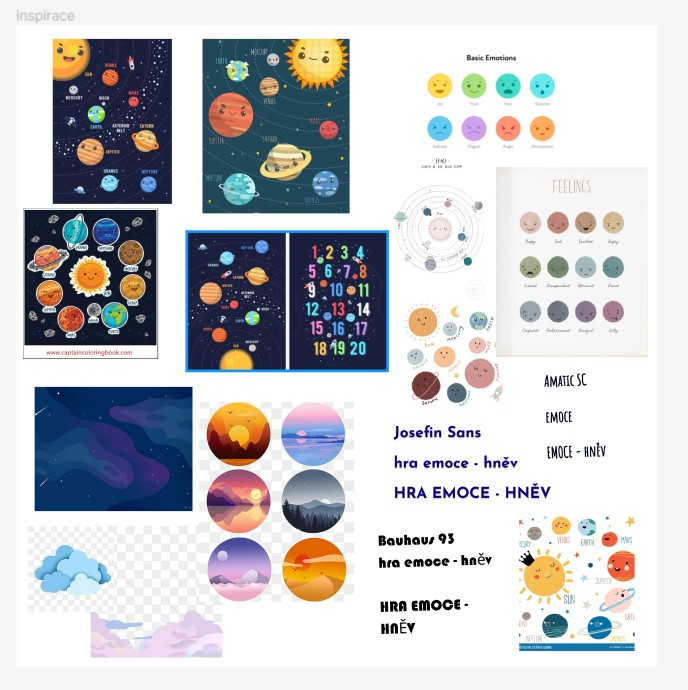

Vesmírem emocí
O projektu

Vesmírem emocí je malá zábavná hra s roztomilým designem pro děti a jejich rodiče, která si klade za cíl seznámit je se základními lidskými emocemi jako je radost, smutek, hněv a dalšími pěti.
Přijde Vám, že vesmír a emoce, fyzický svět a pocity, nejdou dost dobře dohromady? Ve hře zjistíte, že i planetka zažívá strach, když je v temném vesmíru úplně sama a nejdál od Slunce. Nebo jaký příjemný pocit asi může mít ta planetka, která po oběžné dráze obdržela zapáskovaný dopis od svého měsíce.
Ostatně pojďte se vydat na dobrodružství a planetky i s jejich emocemi poznat spolu se zvědavou raketkou.

